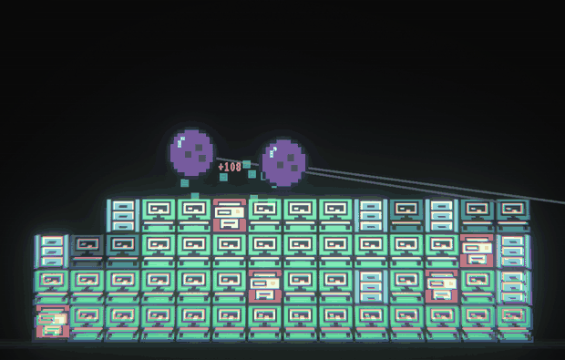
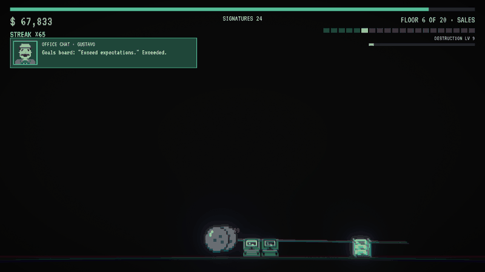
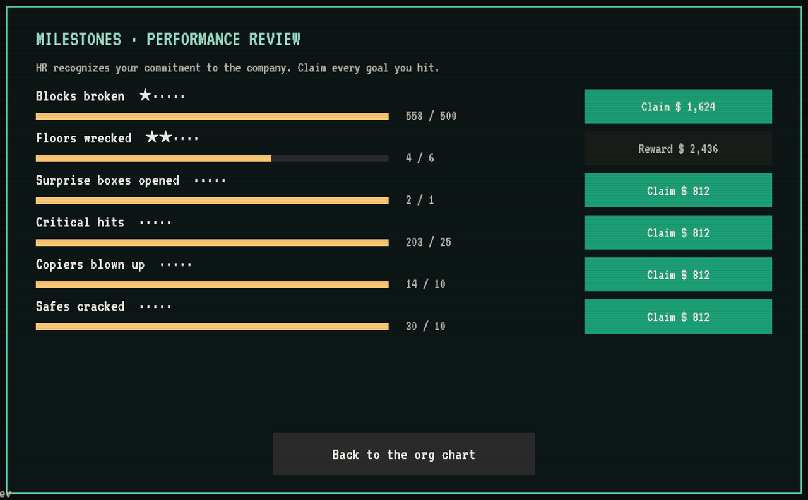
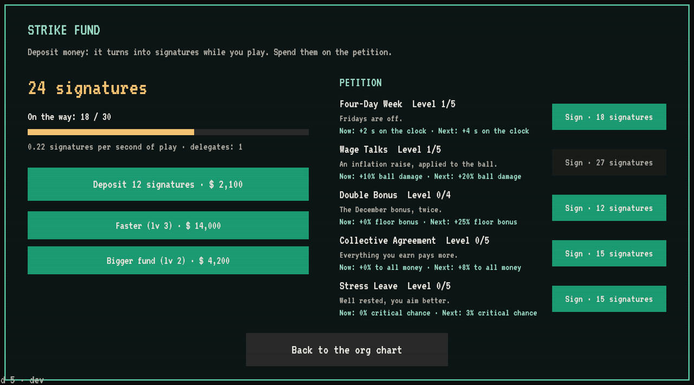
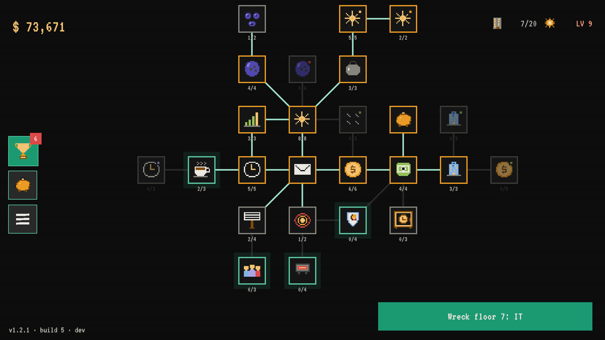

Milestones, the Strike Fund and critical hits
Esta entrada está escrita en inglés.
The play stats from v1.2.1 told me two things. Once you had the hang of the org chart, runs started to feel samey: there was nothing else to chase between floors. And floor 7 (IT) was a wall: lots of runs ending a few blocks short. This update adds new things to work toward, makes hits feel bigger and smooths out the curve.

Critical hits, from act 1
Critical Hit now unlocks on floor 4 instead of the headquarters, and it has a follow-up: Precision Strike pushes criticals from ×2 to ×3 and then ×4. Every critical slams a big sign onto the screen with the multiplier and the damage, from yellow to orange to red.
Wrecking a floor feels like it

When the last block falls, the screen shatters into pieces and a red rubber stamp hits the middle: FLOOR 6 · DEMOLISHED. The next memo is already waiting underneath.
Milestones

From floor 3, the org chart has a trophy button: HR's performance review. Blocks broken, floors wrecked, surprise boxes, critical hits, copiers blown up, safes cracked, and two more for headquarters. Each one has several steps, and each step pays a cash bonus tied to your current floor. A red dot tells you when there's something to claim, and a notice pops up during the run when you hit one.
The Strike Fund

This is the big one. Buy the piggy bank node (right above Severance, from floor 5) and a new screen opens:
- Deposit money into the fund. While you play, it turns into signatures, but only during runs, so it pays to keep breaking things.
- Spend signatures on the Petition: Four-Day Week (longer runs), Wage Talks (+ball damage), Double Bonus (+floor bonus), Collective Agreement (+all money) and Stress Leave (+crits).
- Upgrade the fund's speed and size with money. Every coin you put there is a coin you don't spend on the org chart. Your call.
- Surprise boxes can now give you a union delegate, who speeds up the fund.
Destruction level
A bar under the floor counter fills as you break blocks. Every level adds 2% to all the money you make, forever. It's slow, it's steady, and it never stops going up.
A cleaner org chart

Milestones, the Strike Fund and the menu are now icons on the left edge. Between runs, the floor and level shrink to the top-right corner so the org chart gets the whole screen.
Balance
- Floor 7 is no longer a wall, and floors 7 and 8 ramp up more gently. The rest of act 1 is slightly tougher, so it doesn't fly by.
- Upgrades cost more, especially at headquarters, to make room for everything the fund, milestones and levels give you.
- The late headquarters floors (16, 17 and 18) are a bit softer. Several of you quit floor 17 with 95% of it destroyed. I'm sorry!
One small ask
I'm making this game on my own. If you're enjoying it, a rating on itch.io helps more than you'd think. There's a button for it at the end of the game.
The game sends basic play stats (floor reached, runs, minutes and the name you typed) so I can see where people get stuck. You can turn them off in the menu.
Thanks for playing!
— Pablo, Floppy Key